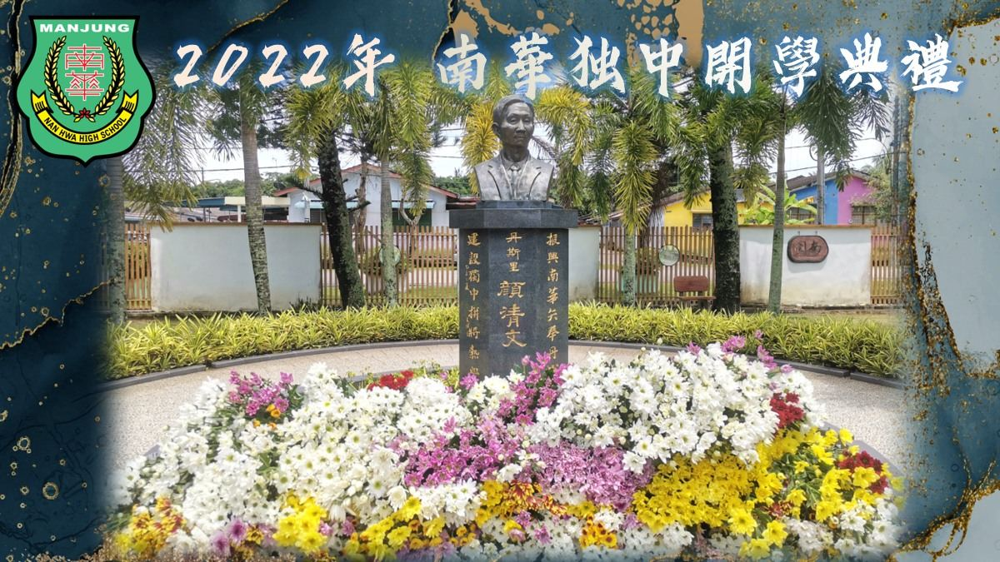
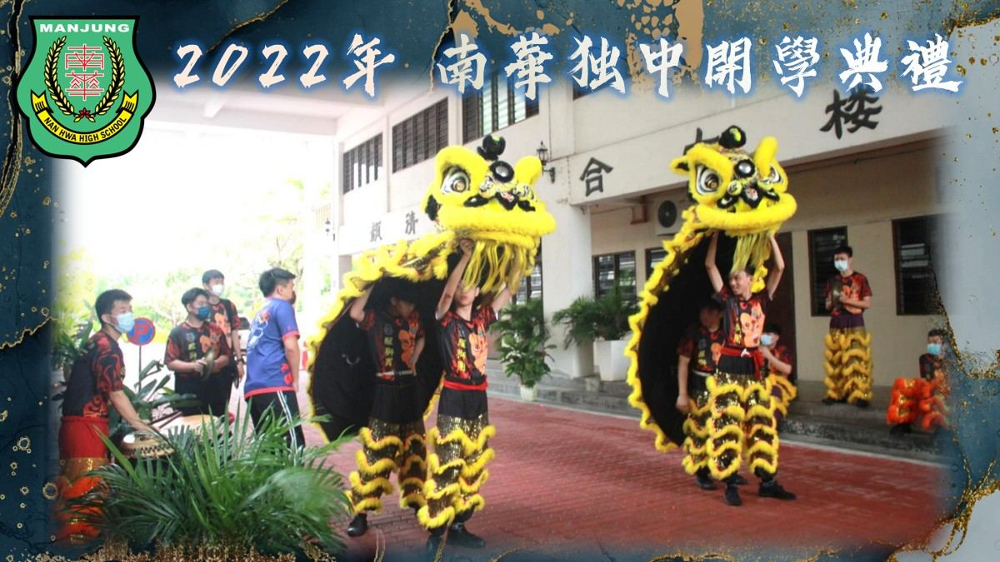
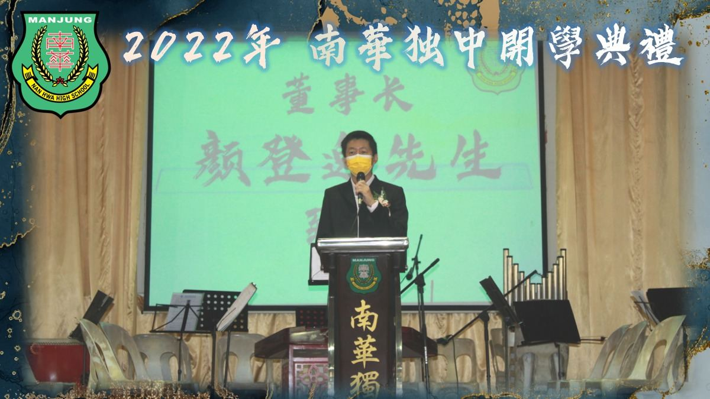
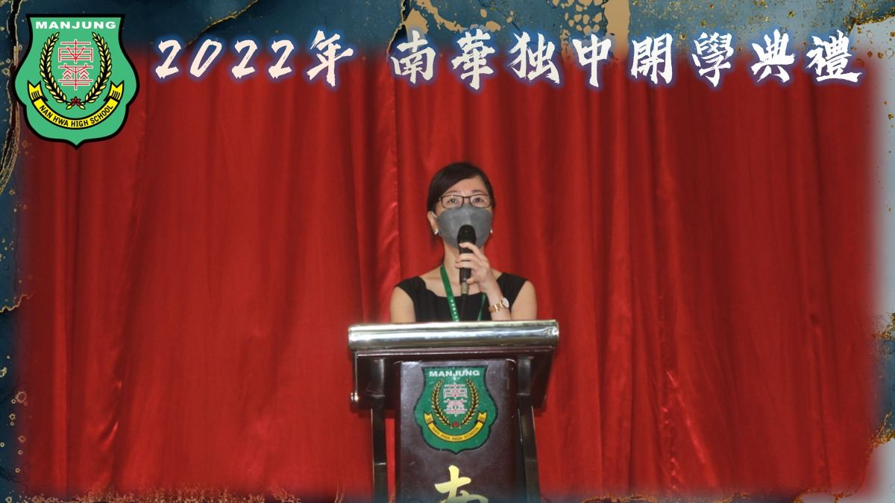
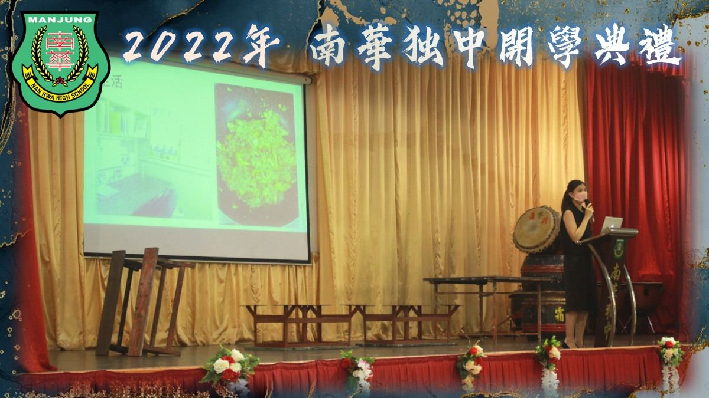
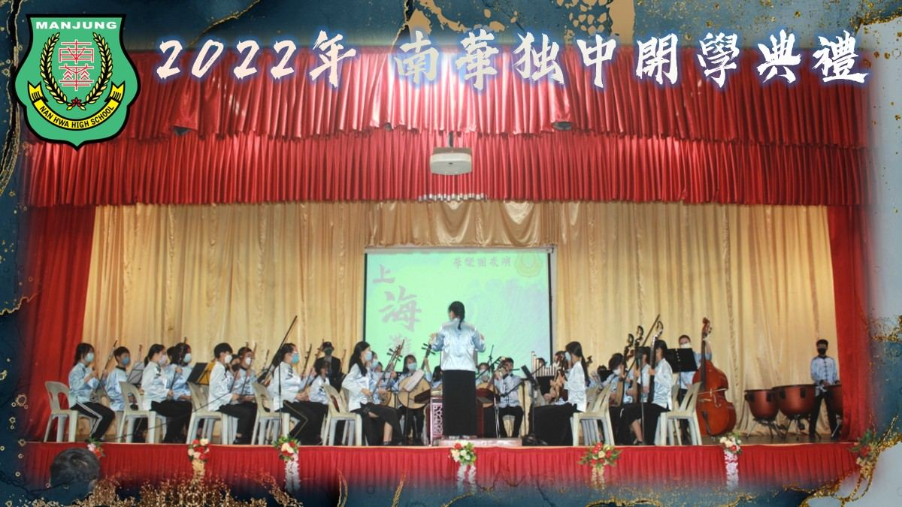
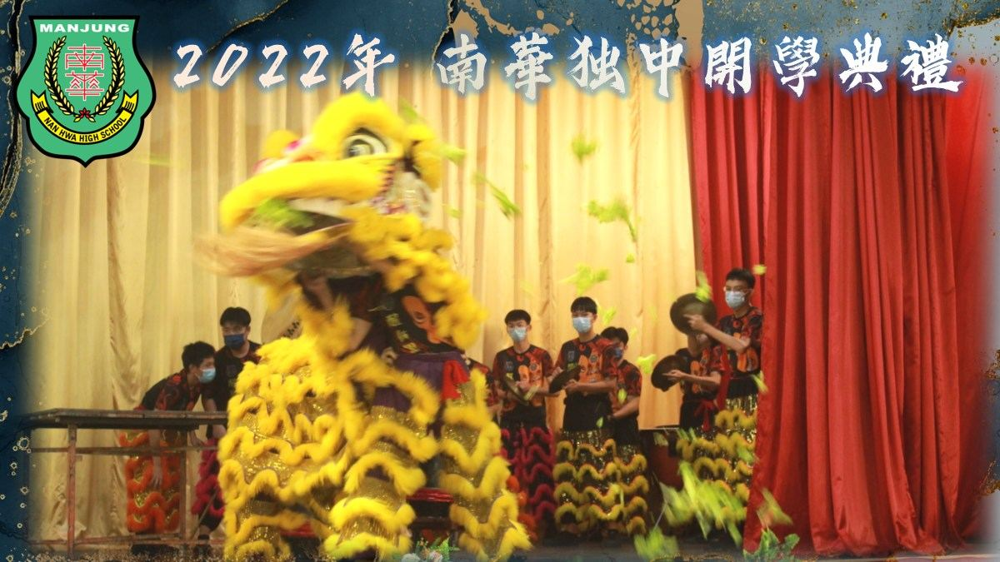
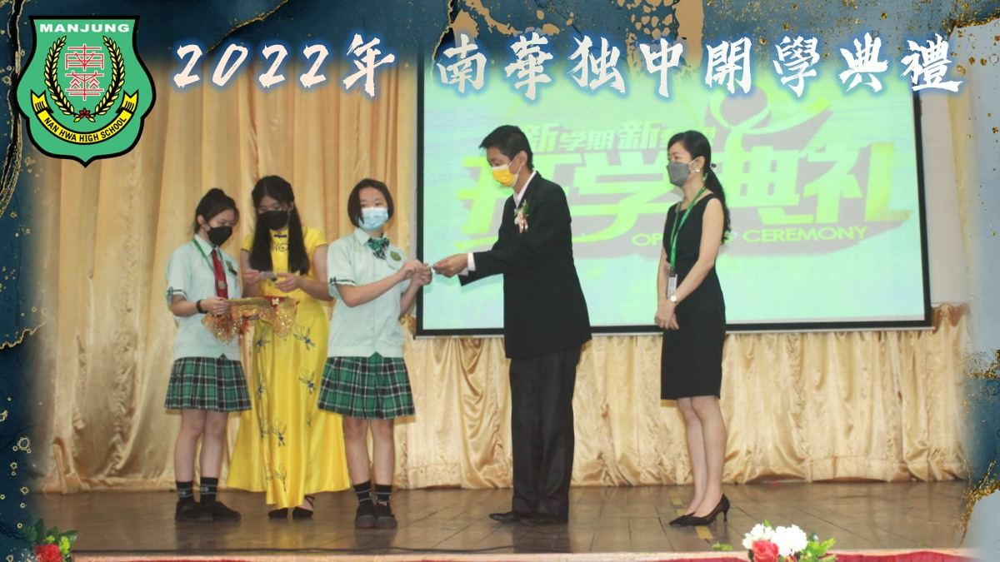

📝 开学典 礼 📖
📝 开学典 礼 📖
2022年南华独中开学典礼于今日顺利举行。
初一新生神采奕奕、精神焕发地出席开学典礼，在董事会、家长联谊会、校方的见证下，领过学号，成为南华一份子。
👩🔬今日你以南华为荣，
👩⚕️明日南华以你为傲！
除了颁布新生学号、新生代表致辞的流程以外，校方也安排了精彩的学会团体表演、统考优异生致辞、杰出校友致辞等环节，激励初一新生们发愤图强、勤奋好学。
另外也秉持着“感恩先贤、心怀恩惠”的精神，特此安排了嘉宾和全体师生向“南华独中之父”丹斯里颜清文铜像献花敬礼的仪式，缅怀“前人种树，后人乘凉”的恩惠，时时刻刻心存感激之情。
#开学典礼 #南华独中之父 #丹斯里颜清文 #南华独中 #曼绒 #实兆远







